This tutorial guides you through a simple workflow to upload a document, interact with the document, and interact with an AIP Chatbot.
AIP Threads can be accessed from the platformâs workspace navigation bar or by using the quick search shortcuts CMD + J (macOS) or CTRL + J (Windows).
The AIP Threads interface can be divided into two main components, numbered left-to-right in the notional screenshot below:
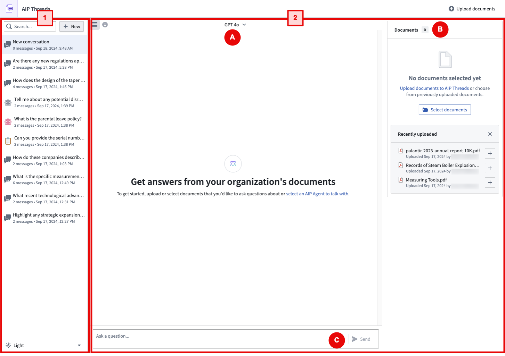
In a typical AIP Threads workflow, you can begin by selecting a previous conversation or starting a new one on the left panel (1), then using the right panel (2) to interact with documents or AIP Chatbots. To talk to an AIP Chatbot, simply select one from the Thread configuration dropdown menu (A) and begin interacting (C). To interact with documents, upload and select documents in the Document card (B) then begin interacting (C).
The following section will discuss features configurable in the left panel.
You can create a new thread, select from existing threads, and delete threads.
You can adjust the visual settings using the option under the thread history.
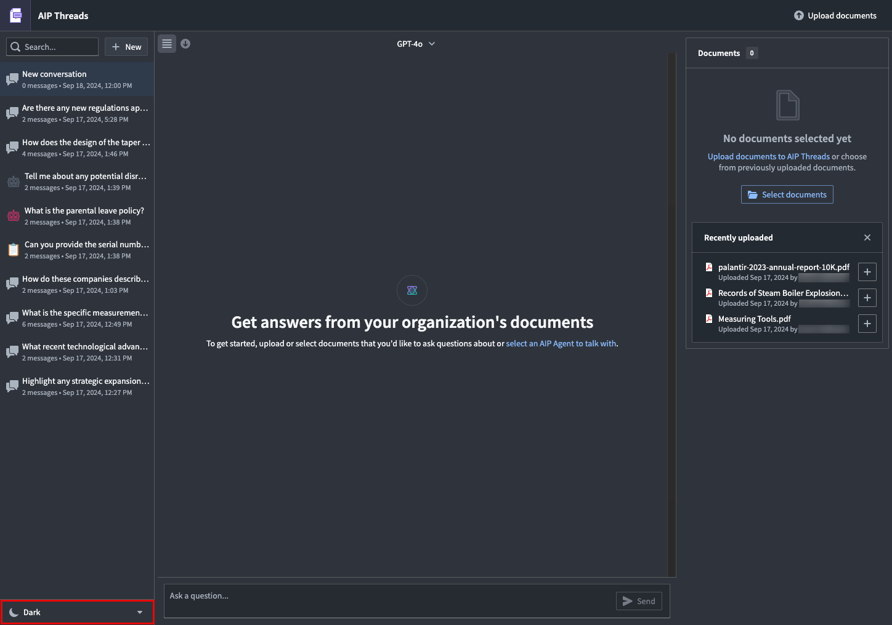
You can minimize the left panel with the following button.
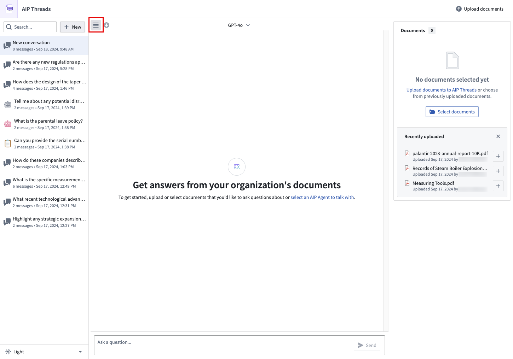
You can download the contents of a conversation (as JSON or PDF) using the Export option.
AIP Threads currently supports native (non-scanned) PDF documents.
To upload a document, follow the Upload option in the Documents card.
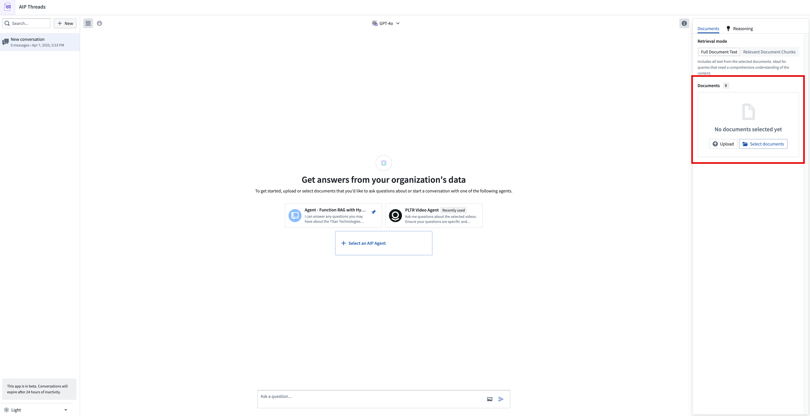
After choosing a media set for the document storage location, drag and drop the documents to be processed.
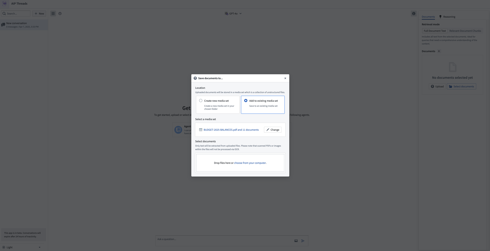
Add documents to the context of a thread using the Select documents option to access the document selection dialog.
You may now start the thread by asking questions of the documents.
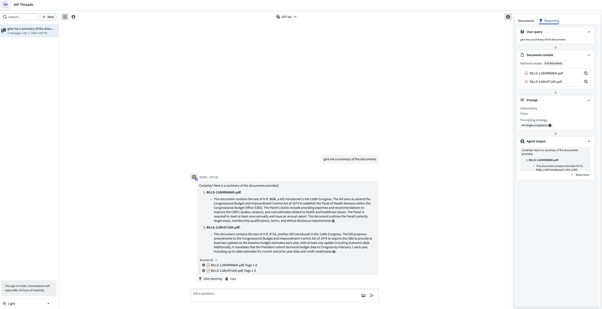
AIP Threads has two document modes: full document text and relevant document chunks (beta). Full document text extracts the entire text from the document, while relevant document chunks extract only the most semantically relevant chunks.
Full document text is useful for short and concise documents or when you need the LLM to review the entire content. For larger documents or when you need to focus on specific sections or details, relevant document chunks mode is more efficient. Keep in mind that using full document text may lead to context window limitations. To avoid exceeding the context capacity for the LLM, switch to relevant document chunks mode.
:::callout{theme="neutral"} When using the relevant document chunks mode, the chunking strategy by default uses 4096 characters per chunk (~1024 tokens), 512 character chunk overlap (~128 tokens), and Text embedding ada-002 as the embedding model. Enrollments that do not have access to the ada-002 model can use a different embedding model. :::
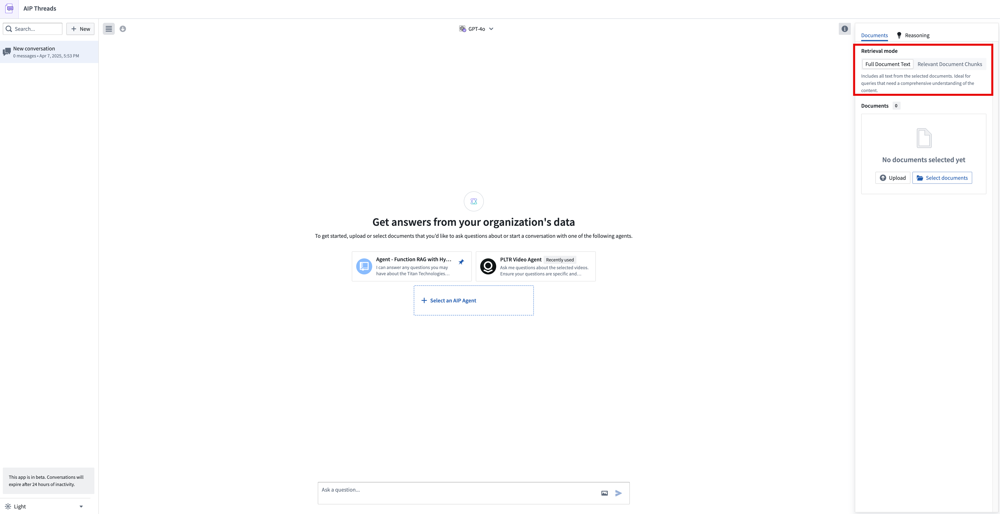
The model has been instructed to provide citations to the original documents with each answer, and users should verify the responses of the LLM. The citations should point to the corresponding page number in the PDF document indicating where the information was sourced.
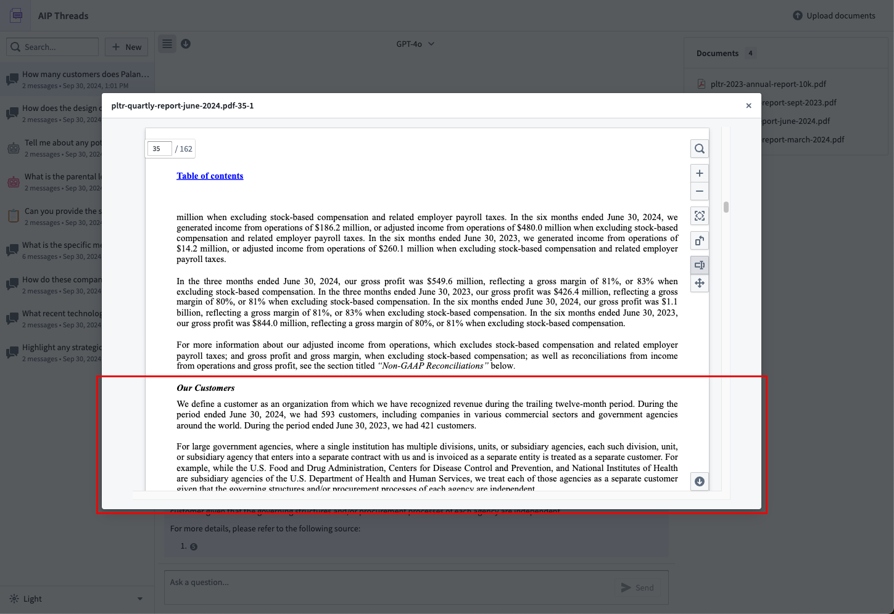
If you would like to change the documents in the context for a thread, either create a new thread and reselect the documents of interest or select Start new thread with current configuration, accessible from the model dropdown menu defined later on this page.
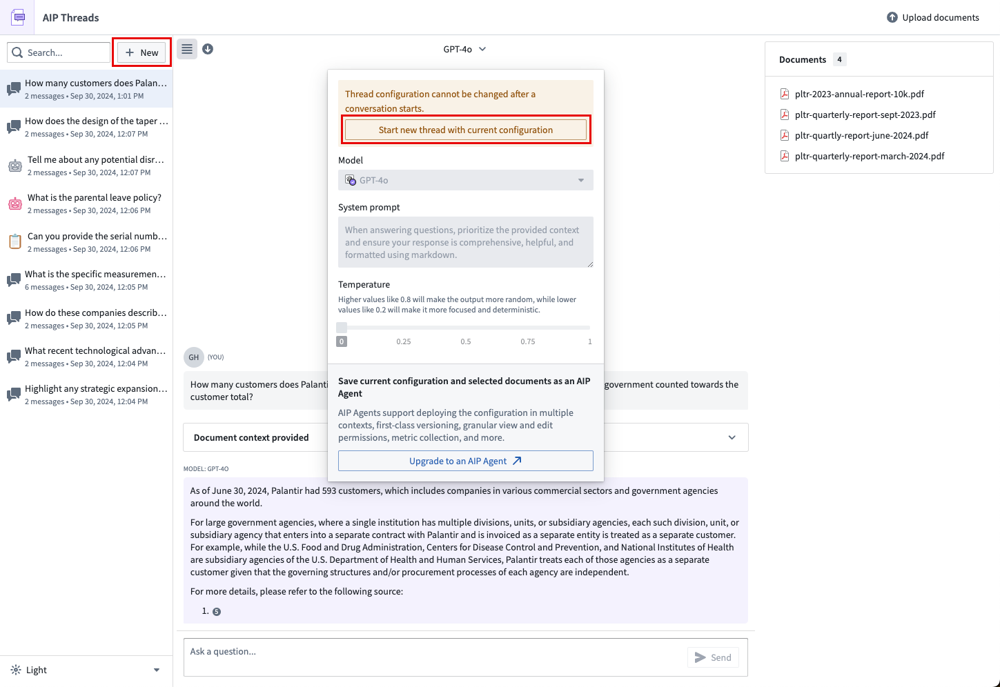
The following section outlines the different configuration options available.
Users can select the LLM used to interact with documents. The models available to you are a subset of those enabled on your enrollment.
Users can modify the system prompt, which is an instruction for an LLM written in natural language. If you would like to modify the system prompt, keep in mind that a LLM only has access to the data that you specifically make available to it. In the case of the default AIP Threads experience, this would be just the documents you have added to the thread. This is different from AIP Chatbot Mode.
Users can modify the model temperature to determine the balance between a more focused, deterministic output (default value 0) and a more random output (maximum value 1).
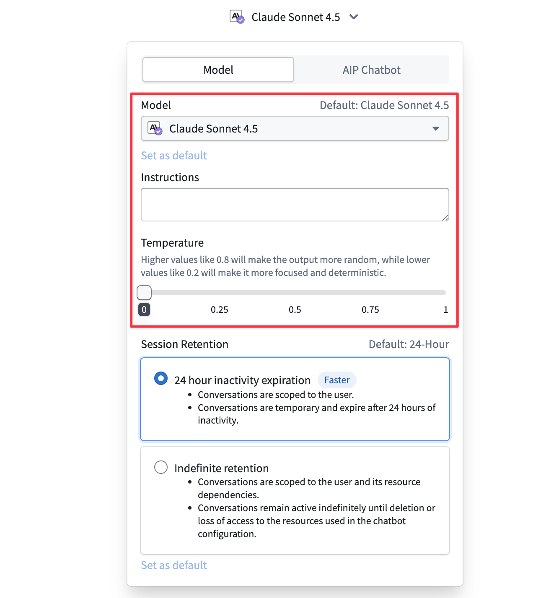
If you find that a particular document or set of documents or configuration of the model and prompting is valuable enough to use again or to share with another user, you may upgrade the thread configuration to an AIP Chatbot by using the option available in the model configuration dropdown menu.
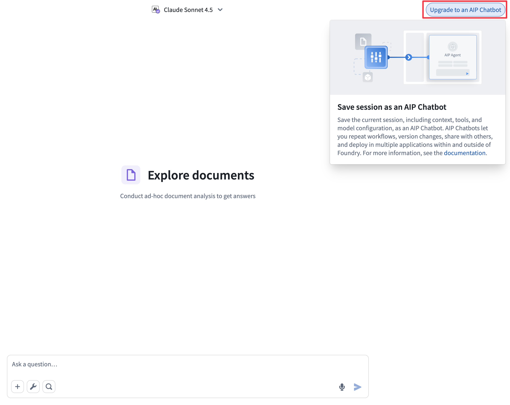
This will take you to AIP Chatbot Studio where you can complete the configuration of the chatbot. Upon publishing in AIP Chatbot Studio and refreshing AIP Threads, you will be able to interact with it again in AIP Threads.
To select an AIP Chatbot to interact with, use the dropdown menu.
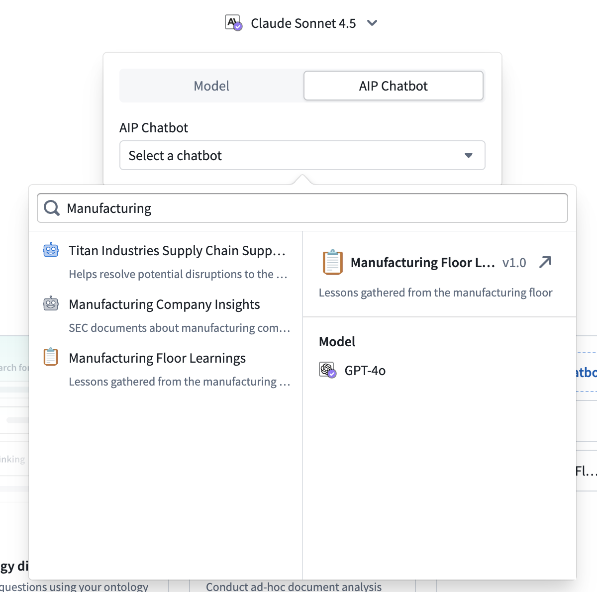
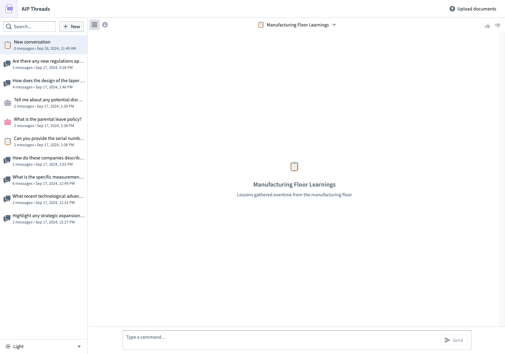
To make a particular chatbot one of your default options to use when starting a new thread, set a chatbot as default.
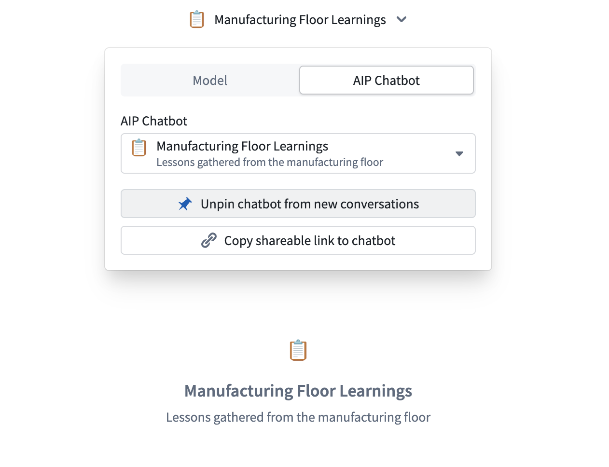